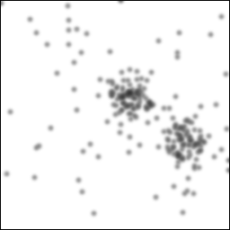

<!doctype html>
<html lang="en">

<head>

<meta charset="utf-8">

<title>Firm Clustering</title>

<meta name="description" content="Firm Clustering">
<meta name="author" content="Douglas Hanley">

<meta name="apple-mobile-web-app-capable" content="yes" />
<meta name="apple-mobile-web-app-status-bar-style" content="black-translucent" />

<meta name="viewport" content="width=device-width, initial-scale=1.0, maximum-scale=1.0, user-scalable=no">

<link rel="stylesheet" href="/reveal.js/css/reveal.css">
<link rel="stylesheet" href="/reveal.js/css/theme/white.css" id="theme">

<!-- For syntax highlighting -->
<link rel="stylesheet" href="/reveal.js/lib/css/zenburn.css">

<!-- local lecture style -->
<link rel="stylesheet" href="index.css">

<script>
if (window.location.search.match(/print-pdf/gi)) {
    var link = document.createElement('link');
    link.rel = 'stylesheet';
    link.type = 'text/css';
    link.href = '/reveal.js/css/print/pdf.css';
    document.getElementsByTagName('head')[0].appendChild(link);
}
</script>

<style>
.reveal .slides img[alt=sample_freqs] {
    width: 90%;
}
.reveal .slides img[alt=results] {
    width: 90%;
}
.reveal .slides img[alt=windows] {
    width: 100%;
}
</style>

<!--[if lt IE 9]>
<script src="revealjs/lib/js/html5shiv.js"></script>
<![endif]-->

</head>

<body>

<div class="reveal">

<div class="slides">

<section data-markdown data-separator="^---$">
<script type="text/template">
# Spatial Clustering of Firms:
# A Machine Learning Approach

<br/><br/>

##### Douglas Hanley (Pitt)
##### Chengying Luo (Pitt → Happy Elements)
##### Mingqin Wu (SCNU)

<br/><br/>

### SCNU 2019

---

## Firm Geography

How does the spatial arrangement of firms affect productivity?

What new tools can we use to approach this question?

What can these results tell us about the role of cities in production?

→ We propose a method that utilizes advances in machine learning related to image classification

→ This imposes fewer assumptions and minimizes the loss of information

---

## Density Measures

Traditional methods have used density as a sufficient stastic
- pro: can be run at higher levels of aggregation (city, county, etc)
- con: requires an arbitrary definition of geographic unit

This can be improved by using an **effective** firm density (adding empty land has no effect)
$$
\frac{\int_A \rho(x) dx}{\int_A dx}
\quad \longrightarrow \quad
\frac{\int_A \rho^2(x) dx}{\int_A dx}
$$

---

## Characteristic Scale

Duranton and Overman (2005) employ a **two-point correlation function** to measure what they call localization
- this is simply the density of distances between pairs of firms (popular in astrophysics)

They focus on heterogeneity across industries: each industry has a characteristic distance scale between firms

This (rightly?) compresses radial symmetry (anisitropy) but still throws away a lot of useful information

---

## Information Loss

 <!-- .element style="width: 80%;" -->
 <!-- .element style="width: 80%;" -->

---

## Multiple Poles

 <!-- .element style="width: 100%;" -->

Distributions for pharmaceuticals (left) and textile machinery (right). Pharma is clearly unipolar, while textiles has at least two clusters

---

## Maps and Information

In general, we find that maps are extremely high dimensional objects, but how can we handle this in an economic setting?

 <!-- .element class="full" -->

---

## Machine Vision

This is a powerful set of tools developed primarily for image classificiation tasks

The canonical example is that of classifying pictures of hand-written digits (0—9) into their corresponding number
- users include post offices, banks, etc
- major training datasets include MNIST and CIFAR

---

## Digit Classifier (MNIST)


---

## Image Classifier (CIFAR-10)


---

## Application to Maps

We can apply these to maps by rasterizing their continuous density into a grid of pixels ($\mathbb{R}_+^{N \cdot N}$)

<p style="text-align: center;">

<span style="vertical-align: middle; font-size: 25px;">$\qquad\large\longrightarrow\qquad\text{Productivity}$</span>
</p>

Instead of classifying them into digits, we instead want to predict other properties of firms represented therein (like productivity or growth)

---

## Neural Networks

Neural networks (NN) consist of a network of cells, each of which performs a simple operation on the data


<p style="text-align: center; font-size: 20px; font-style: italic; padding: 0px;">Source: Towards Data Science</p>

---

## Network Cells

Inputs ("X data") are fed in and through the network to generate outputs ("Y data")

Each cell applies an "activation function" ($F$) to a linear sum of its inputs
$$
y = F\left( W \cdot x + b \right)
$$

Training a network involves choosing parameters ($W$ and $b$) to minimize an objective function
- mean-squared error for real value data or categorical cross-entry for categorical data

---

## Cell Activation Zoo

Multinomial probabilities (softmax)
$$
z = W \cdot x + b \quad \rightarrow \quad y_k = \frac{\exp(z_k)}{\sum_{k^{\prime}}\exp(z_{k^{\prime}})}
$$

Rectified linear unit (relu)
`$$
y = \max \left\{ 0 , W \cdot x + b \right\}
$$`

Sign activation (tanh)
$$
y = \tanh \left( W \cdot x + b \right)
$$

---

## Convolution Cell

These aggregate local information and can detect small features line a border or a corner
- examples include blurring (averaging), contrast, flow, etc

 <!-- .element class="wide" -->
<p style="text-align: center; font-size: 20px; font-style: italic; padding: 0px;">Source: Designing What's Next</p>

---

## Convolutional Networks

 <!-- .element class="wide" -->
<p style="text-align: center; font-size: 20px; font-style: italic; padding: 0px;">Source: Elite Data Science</p>

The primary feature of CNNs is that they exploit translational symmetry at small spatial scales.

Image is reduced with successive steps of convolution and pooling, then finally classified with a dense network.

---

## Complexity and Overfitting

Massive number of parameters from high-level layers (MNIST: 407k, CIFAR10: 890k)
- even with millions of obervations, we run the risk of overfitting

Classical ML technique for preventing overfitting is to separate out a fraction (say 20%) of the data as a validation set
- don't train on this, just test predictions afterwards
- if validation error starts rising, we are probably overfitting

---

## Dropout Techniques

Srivastava et al (2014) proposed a revolutionary method for preventing overfitting: **dropout** randomly severs connections in the network while training


<p style="text-align: center; font-size: 20px; font-style: italic; padding: 0px;">Source: Srivastava et al (2014)</p>

---

## Algorithmic Tradeoff

In the high accuracy regime of neural networks, understanding mechanism of "black box" is difficult


<p style="text-align: center; font-size: 20px; font-style: italic; padding: 0px;">Source: Towards Data Science</p>

---

## Existing Literature

Engstrom, Hersh, and Newhouse (2017): predicting poverty and consumption levels in Sri Lanka from satellite imagery
- not end-to-end: use ML to extract features like cars and buildings, then feed into regression analysis

Large literature using night time lights (NTL) to predict poverty and GDP using traditional techniques (Henderson, Storeygard, and Weil, 2012)

---

## Data Sources

Economic Census (NBS) of Chinese firms in the year 2004
- includes both manufacturing and services
- roughly 1.4 million firms in total

Firm level fields available
- street address → geo coordinates using Baidu API
- categorical data: industry code and province
- balance sheet info: income, assets, employees
- currently unused: age and firm type

---

## Density Maps

The density map is firm specific: it is the density map centered on the firm for a given radius
- we use both 2km and 8km radii with 256 pixels
- due to measurement error, we add blurr of ~30m

Final output is 256x256 monochrome 8-bit JPEG image file for each firm (1.4 million) and each radius
 <!-- .element class="full" -->

---

## Classical Method

Using the same density maps, we can aggregate into concentric rings: 0-2km, 2-4km, 4-8km
$$
\log(p_i) \sim 1 + d_{0-2} + d_{2-4} + d_{4-8}
$$

Coefficients for $d_{0-2}$ and $d_{2-4}$ are insignificant, while $d_{4-8}$ is significant and positive

| Variable  | Coefficient | Std Err | P-value |
|-----------|-------------|---------|---------|
| 1         | 4.29        | 0.01    | 0.00    |
| $d_{0-2}$ | -6.09       | 37.4    | 0.87    |
| $d_{2-4}$ | 14.2        | 24.2    | 0.56    |
| $d_{4-8}$ | 11.7        | 5.38    | 0.03**  |

---

## Classical Results

Results have low predictive power and show little variation across true productivity bins

 <!-- .element class="full" -->

---


## Computational Tools

Recent renaissance of machine learning tools: Tensorflow (Google) and Torch (Facebook)
- higher level APIs such as Keras make network construction simple

```
model = keras.models.Sequential([
 	keras.layers.Flatten(input_shape=(28, 28)),
 	keras.layers.Dense(512, activation=tf.nn.relu),
 	keras.layers.Dropout(0.2),
 	keras.layers.Dense(10, activation=tf.nn.softmax)
])
```

Only need to specify objective (categorical cross entry) and optimizer (gradient, adam, etc) and ready to train

---

## CNN Network Structure

`$$\begin{array}{c}
\text{Input Image [256x256]} \\
\downarrow \\
\text{Convolution + Max Pooling [32x32]} \\
\downarrow \\
\text{Convolution + Max Pooling [8x8]} \\
\downarrow \\
\text{Dense Layer [64]} \\
\downarrow \\
\text{Output [1]}
\end{array}$$`

---

## CNN Results

Same objective as classical case (log productivity) using mean squared error as the objective and the `adam` optimizer for 25 epochs

 <!-- .element class="full" -->

---

## CNN Validation

Inspecting validation numbers reveals a sustained effect but also some overfitting

 <!-- .element class="full" -->

---

## Intermediate Results

To bridge the gap between classical (OLS) and CNN, we can look at a simple radial model (where the radius is trained rather than fixed). This appears to have little predictive power.

 <!-- .element class="full" -->

---

## Impulse Responses

To understand effect of spatial clustering, we take each original firm and add in new firms artificially, then plot change in log productivity (average is ~0.5)

 <!-- .element style="width: 50%;" -->

---

## Endogeneity Issues

Up to now, we focused on prediction, but in terms of inference there is an endogeneity issue
- there are potential confounders, firm location choice is endogenous

In terms of observable characteristics, there are two approaches
1. partial out industry/province fixed effects and predict residual
2. feed additional firm features directly into neural network

---

## Residual Productivity

Partialling out fixed effects from industry code (4-digit) still leaves a substantial amount of correlated variation

 <!-- .element style="width: 50%;" -->

---

## Residual Results


---

## Intrumental Variables

Here we can adapt a standard instrumental variables approach as well
- two steps: prediction and inference

Example instrument: distance to ancient provincial capital
- prediction: estimate mapping from distance to density map
- inference: use predicted density map as input into productivity

---

## Additional Inputs

Currently we use only the density map of firms at various radii
- worker density (weighted by employee count)
- only within industry (or weighted upstream/downstream)

Satellite imagery or other maps to explicitly account for features like hills, mountains, rivers, etc.

---

## Future Work

Use patent data from SIPO to understand the spatial clustering of innovation, which might be even more interesting

Perform same analysis using US data and compare results. Does the differential structure of cities affect firm producitvity substantially?

</script>
</section>

</div>

</div>

<script src="/reveal.js/lib/js/head.min.js" type="text/javascript"></script>
<script src="/reveal.js/js/reveal.js" type="text/javascript"></script>

<script>

// Full list of configuration options available here:
// https://github.com/hakimel/reveal.js#configuration
Reveal.initialize({
  controls: false,
  progress: true,
  history: true,
  center: false,
  slideNumber: true,
  width: 800,
  minScale: 0.1,

  transition: Reveal.getQueryHash().transition || 'none', // default/cube/page/concave/zoom/linear/fade/none

  // Parallax scrolling
  // parallaxBackgroundImage: 'https://s3.amazonaws.com/hakim-static/reveal-js/reveal-parallax-1.jpg',
  // parallaxBackgroundSize: '2100px 900px',

  math: {
      // mathjax: 'http://cdn.mathjax.org/mathjax/latest/MathJax.js',
      mathjax: '/MathJax/MathJax.js',
      config: 'TeX-AMS_HTML-full'
  },

  // Optional libraries used to extend on reveal.js
  dependencies: [
    { src: '/reveal.js/lib/js/classList.js', condition: function() { return !document.body.classList; } },
    { src: '/reveal.js/plugin/highlight/highlight.js', async: true, callback: function() { hljs.initHighlightingOnLoad(); } },
    { src: '/reveal.js/plugin/zoom-js/zoom.js', async: true, condition: function() { return !!document.body.classList; } },
    { src: '/reveal.js/plugin/markdown/marked.js', condition: function() { return !!document.querySelector( '[data-markdown]' ); } },
    { src: '/reveal.js/plugin/markdown/markdown.js', condition: function() { return !!document.querySelector( '[data-markdown]' ); } },
    { src: '/reveal.js/plugin/math/math.js', async: true }
  ]
});

</script>

</body>

</html>
